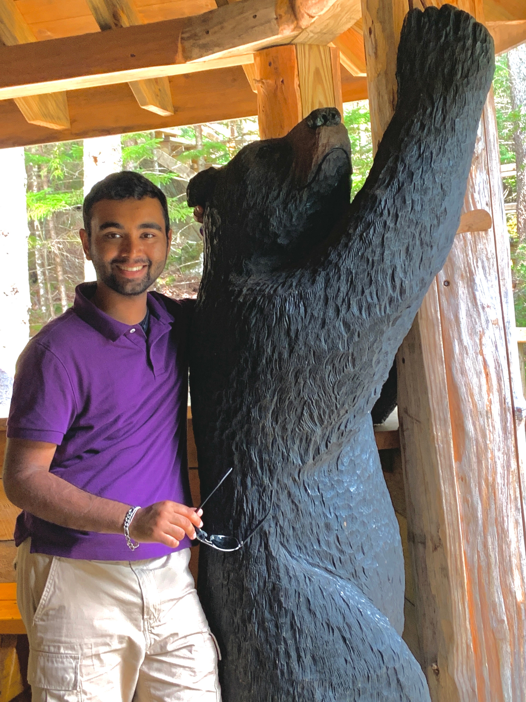

About
My name is Pratham Patel and I am a Sophomore at the University of Pittburgh. Outside of classes, I love to read, solve puzzles, work my mind, workout, and go on runs. I am currently studying Computer Science with a minor in Chemistry. I love a good challenge, whether that's in the form of a math question or a puzzle or if it's in the form of a CS project, I'll get the job done. I have created this website as a way to showcase my skills, my interests, my goals, what I have accomplished, and most importantly, myself.
Projects
Website
This website was originally just a side project, but it has quickly grown to one of my most favorite projects as it represents me and my artistic creativity.
Email Client
A program to mass-email a customized email to multiple people with a personal flair included. The user can add the recipients name or any other information through a CSV.
Habits Track
Inspired by Habitica, I created a terminal-based system that rewards you with 'gold' for being productive. You can spend this goal for recreational activities or to feel less guilty about your indulgances.
Boggle Java
I made a recursive program in Java that returns all 3+ letter words from a 10x10 board of random letters. Words are cross-checked against a provided dictionary. This was for CS 0445 during Fall of Freshman year.
DLB Search Engine
For my Algorithms class, I made a search engine, complete with user history, that would produce results in logarithmic time.
Centipede
I had to follow all of the conventional rules and game mechanics, but was free to add other small tidbits to make the game more enjoyable. I ended up adding native MIPS sounds using syscall 31 with various parameters. This was for CS 0447 during Fall of Sophomore year.
Experience
Code Ninjas
I had the opportunity to teach young children how to create video games in JavaScript. We used Code Ninja's Game Development Platform (GDP). I primarily worked with children between the ages of 5 and 13 with a focus on the older children who were creating more complex video games. I collaborated with the other Sensei's and made sure that all of the children were being helped but also learning. As this was during COVID, we had to introduce a hybrid environment where certain students would be online only whereas others would come in-person. I dealt mainly with the in-person children and was able to help them hands-on.
Research Assistant
I am currently a Research Assistant under Dr. Hansruedi Mathys. We currently work with a dataset provided by Rush University, where we analyze GigaBytes of data and try to find out more about Alzheimer's Disease. We are currently trying to understand the cellular and molecular underlyings of AD and why certain people have a natural resistance to it. I have been working under Dr. Mathys since Summer 2021 and have the opportunity to lead my own project within his research. I worked with other students and fellows in order to develop my own python script analyzing the presence of senescent (toxic) cells. Other than that project, we have developed and modified many of our own/others scripts as this lab is a mix between computational biology and neuroscience.
Skills
Hobbies
Outside of school, I love to keep myself busy. I am a passionate amateur photographer. I run an instagram account where I share my photos with the world, @2p_snaps. I use lightroom to edit my photos, primarily focusing on landscape, flowers, urban areas, and the beautiful bridges of Pittsburgh. Although I've ammassed a small following on Instagram, my main inspiration comes from the fact that I do this for fun and I love to see how my pictures have grown in style. I've included some of the picture I've taken below :). I also run a Blog on the side with my best friend, where we write about our personal life, education, living life as a first-generation American, and much more. I love to let my creativity run free, expressing it through my photographs, writing, and anything else that makes me feel free.


Contact Me
I would love for you to contact me, I'm currently open to Internships, part-time or temporary job offers, or any kind of learning experience. I have linked my GitHub, LinkedIn, email, and you're already at my personal website. I wish to eventually join a company as a Software Developer, but I know that there are many applications for my skills and I want to be able to explore my options before committing to a single subfield. Thank you for viewing my website all the way through. I hope I was able to showcase both myself and my skills through this page, feel free to contact me for whatever reason and I hope you have a great day.
© 2022 Pratham Patel